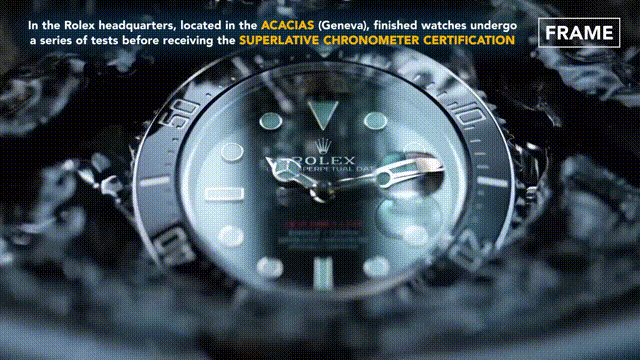

← 部落格 × Harbour
Bomin Kim（特效）
和组员讨论后，我们选择手表作为产品。故事讲述一支奢华手表经历精细蜕变的旅程：从未经加工的原料，到一件精工打造的时计，最终以优雅与精准的象征之姿问世。


第 1 周
团队成员
1 月 12 日
Bomin Kim（特效）
Caleb Stovall（3D／2D）
Mojie Tang（特效）
Sydney Relkin（合成）
Yiqi Zheng（特效）
SCAD × HARBOR － 第 1 周
大家好，这是我 SCAD × Harbor 部落格的第一周！
这周我们决定了团队名称：Cronos，也选定了产品：手表。前期制作包括分镜、情绪板、预视，以及每个镜头的参考。
和组员讨论后，我们选择手表作为产品。故事讲述一支奢华手表经历精细蜕变的旅程：从未经加工的原料，到一件精工打造的时计，最终以优雅与精准的象征之姿问世。
分镜：
由 Kailey Gorsuch 绘制
参考：

预视：
参考
这是我用 Houdini 的 POPs 为金色粒子做的非常粗略的预视。下周我会加入更多细节，例如灰尘和散落在表面的金粉。
下周我也会制作另一个熔金的镜头，在 Houdini 中用 FLIP 流体模拟熔金，并用 Pyro 制作烟雾。